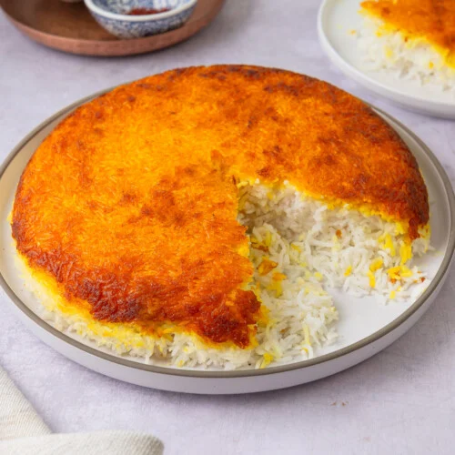
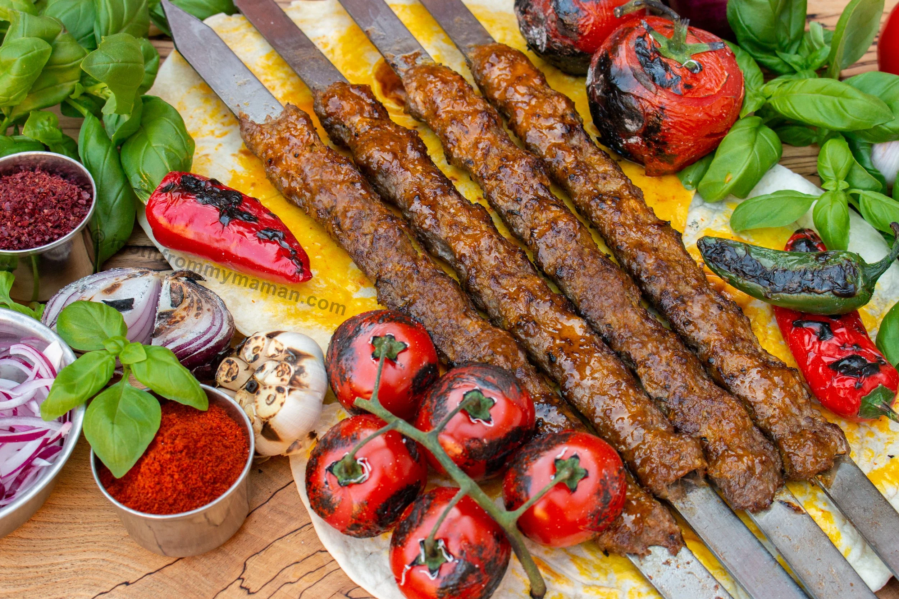

The centerpiece
Tahchin
Tahdig is the golden, crackling layer of rice pulled from the bottom of the pot, and it's often the most fought-over part of the meal. Butter, saffron and a thin layer of potato or bread line the pan before the rice steams above it, so the bottom fries slowly while the rest cooks soft. Every household keeps its own method, passed down more by feel than by recipe, and a good tahdig is judged by the sound it makes when it's lifted out in one piece.

From the grill
Kebab Koobideh
Ground lamb or beef is mixed with grated onion and a little baking soda, then pressed flat onto wide skewers and cooked fast over charcoal. The fat renders as it grills, basting the meat and keeping it loose rather than dense. It's served with grilled tomato, a mound of buttered rice, and sometimes a raw egg yolk stirred through — simple, but it's the dish most Iranian grills are judged by.
A Persian meal rarely arrives one dish at a time. The rice, the stew, the herbs, the yogurt and the bread all land on the sofreh together, and everyone serves themselves through the course of the meal rather than in courses. Meals lean on slow-cooked stews called khoresht, built from herbs, fruit or beans and eaten over rice, and on a pantry of dried limes, saffron, barberries and rosewater that shows up across sweet and savory cooking alike.